Jesenji Blogopen, Spens, Novi Sad, 10. novembar 2007.
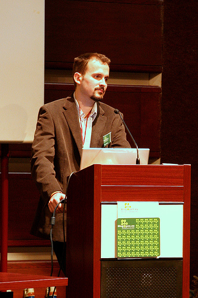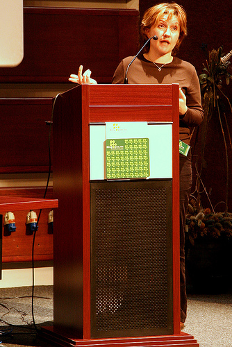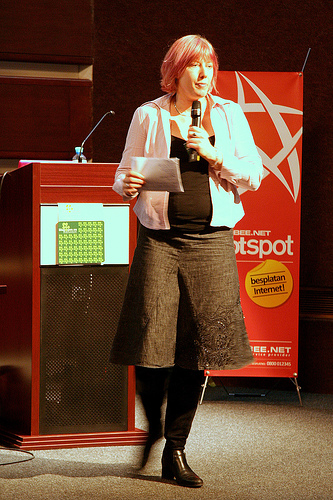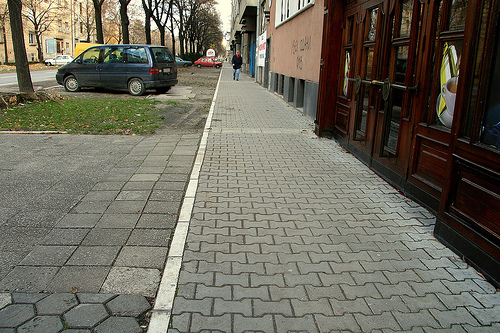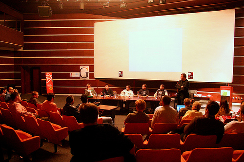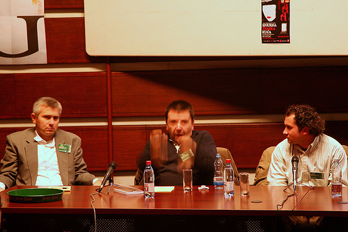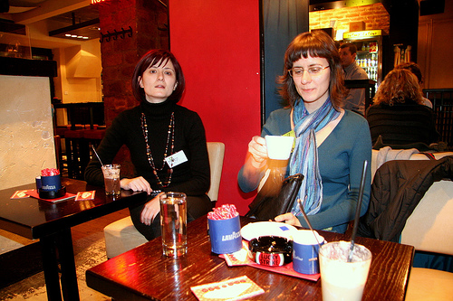« Sad pijmo... | Main | Šetnja po kotorskim zidinama »
Jesenji Blogopen, Spens, Novi Sad, 10. novembar 2007.
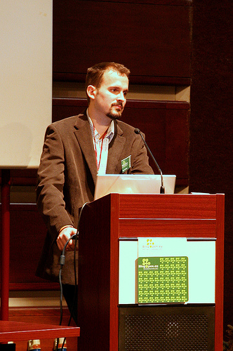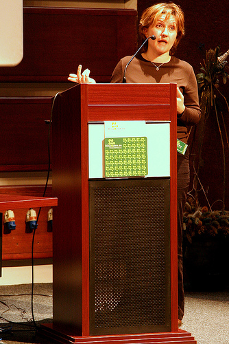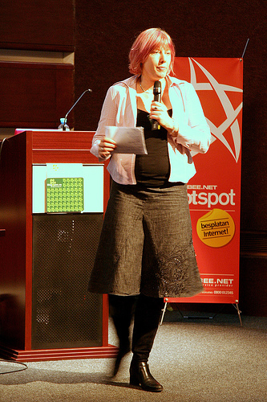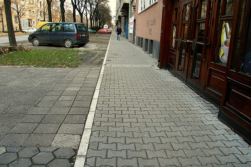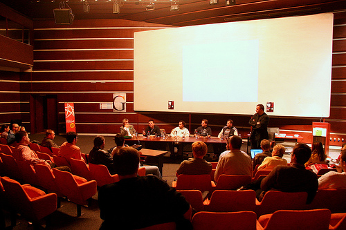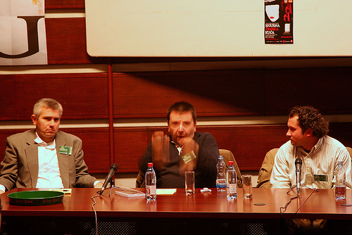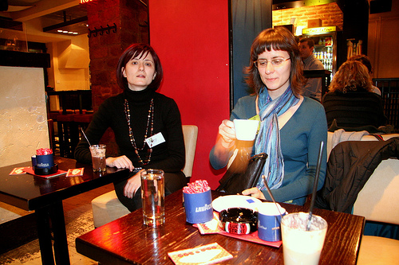This page contains a single entry from the blog posted on november 11, 2007 10:19 AM.
The previous post in this blog was Sad pijmo....
The next post in this blog is Šetnja po kotorskim zidinama.
Many more can be found on the main index page or by looking through the archives.
Comments (5)
Blog Open je bio stvarno dobro organizovan i zanimljiv.
Dejana Bizingera sam cula samo delom, jer sam zakasnila, pa nemam potpun utisak, ali bilo je profi, i svidja mi se teza o projektima uz regularan posao koji se na ovaj ili onaj nacin isplate.
Vladislav Gordic Petković je vrlo informisana, precizna u izrazavanju, lepo prica, ideje su na mestu, i meni je ok sto je pricala o knjizevnosti, knjizevnoj kritici i internetu, jer smo tako izasli iz IT voda prvog Blog Opena.
Stephanie Booth je interesantna, simpaticna, prezentacija je zapadnjacki atraktivna i dobro pripremljena, a njena profesionalna prica vrlo motivisuca.
Okrugli sto o novinarstvu i blogovima Miloje Sekulic je vodio vesto i zivo. Ucesnici su generalno bili relevantni, a opet raznoliki. Bilo bi dobro da smo mogli da cujemo i vise detalja o success story Marka Bjelica. Teza IT novinara Zorana Stanojevica da su blogovi po definiciji nepouzdani, a mediji pouzdani je krajnje problematicna, a za mene i vrlo iznenadjujuca, s obzirom na to da se covek tako dugo bavi internetom i medijima (u Vremenu i drugde). Evo, sad radi za RTS, a svako od nas moze se setiti na desetine (mildly speaking) primera kad je verovati RTSu bilo ravno ludilu. Sa druge strane, ima toliko relevantnih blogova sirom sveta, navescu samo jedan primer: http://www.editorsweblog.org. Mislim da on ili ne zna dovoljan broj blogova, ili nije dovoljno promislio na tu temu.
Cestitke organizatorima. Cekamo iduce prolecno izdanje
Posted by la lara | 11.11.07 14:04
Posted on november 11, 2007 14:04
Jeste bilo je baš lepo. I meni se svidela kritičarka književnosti, možda najviše. Super organizacija + interesantni predavači i ne treba ništa više. Šteta što mnogo blogera koji su se prijavili nisu došli.
Posted by elektrokuhinja | 11.11.07 15:14
Posted on november 11, 2007 15:14
Hvala na lepim recima. Ne mislim da ima samo dva kvalitetna zenska bloga u Srbiji, ima ih vise, ali ima mnogo manje poznatih i dobrih zenskih blogera nego sto bi moglo.
Tvoj blog, Flickr i rad mi se svidja.
Posted by Dejan Bizinger | 14.11.07 17:42
Posted on november 14, 2007 17:42
Samo jedna mala ispravka, na okruglom stolu Blog vs. Novinari je učestvovao g. Dušan Belić autor uspešne priče zvane intomobile.com . Dok je g Marko Bjelić, koji je trebao držati radionicu uz Dragana Babića otkazao.
Posted by fotomanijak | 15.11.07 16:38
Posted on november 15, 2007 16:38
Hvala Dejane, a takodje hvala i Fotomanijaku, izgleda da je ipak program bio prenaporan kad sam tako izmesala sva ta imena
Posted by la lara | 15.11.07 17:50
Posted on november 15, 2007 17:50